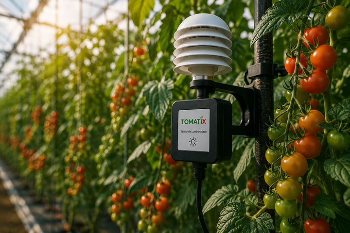

O TOMATIX combina sensores de campo calibrados com um painel de
controle que transforma leituras brutas em decisões. Instale os sensores
em sua estufa ou campo e acompanhe a atualização contínua de dados
DLI e PPFD ao vivo, com alertas quando a luz sair da sua faixa ideal.
